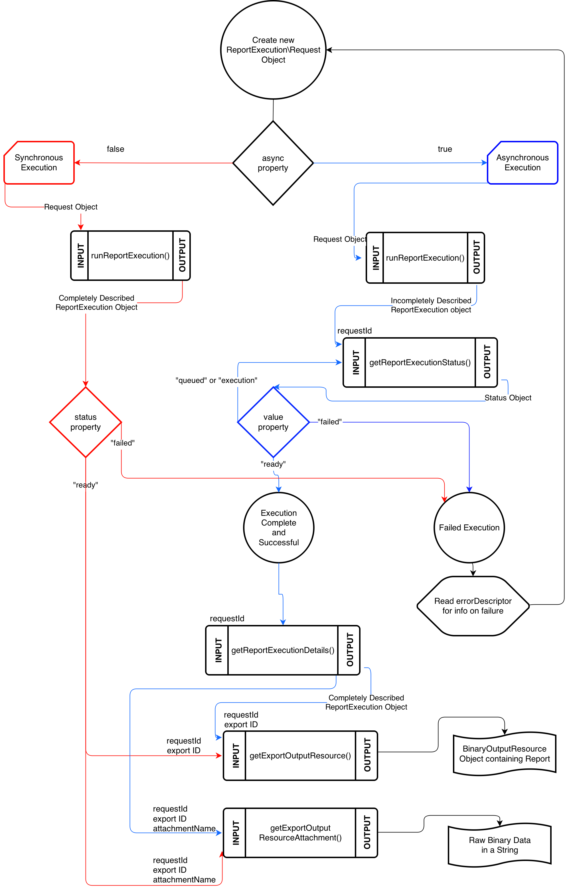

Getting Started
Invoking the Client
In your project, you must include the autoloader so that classes can be loaded as needed. If you have not generated the
autoloader file, please follow the instructions in the README for installation. Then you must initialize a client with
your login credentials.
require_once __DIR__ . "/vendor/autoload.php";
use Jaspersoft\Client\Client;
$c = new Client(
"http://localhost:8080/jasperserver-pro",
"jasperadmin",
"jasperadmin",
"organization_1"
);
Usage Patterns
There are several way to invoke the functions of the client:
// Store service for several calls
$js = $c->jobService();
$js->getJobs("/reports/samples/AllAccounts");
// Or access service methods directly
$c->jobService()->getJobs("/reports/samples/AllAccounts");
Note that all examples on this page assume you are importing objects using the PHP 'use' keyword. If you are not, you
must refer to the objects using the full qualified namespace.
Altering the Request Timeout
If you are having issues with requests timing out, you can alter the amount of time the client waits for a response
before timing out. The default timeout is 30 seconds.
// Let the client wait one whole minute before timing out
$c->setRequestTimeout(60);
Server Information
The client class can also return data about the sever it is connecting to. This data includes date formats, license
information and other info about the server's configuration. It is returned in an associative array format.
$info = $c->serverInfo();
print_r($info);
Destroy Session
When you no longer require the Client object, call the logoutSession() to free up resources by destroying the server
session, as well as releasing locally held resources.
$c->logoutSession();
Repository and Resource Services
domainService()
Obtaining Metadata About a Domain
Given the URI of a domain resource, you can obtain metadata about such resource using getMetadata in the domainService. The metadata object has
a rootLevel element which contains "MetaLevel" and "MetaItem" elements describing the domain's properties.
$metadata = $c->domainService()->getMetadata("/Domains/supermartDomain");
repositoryService()
Searching the Repository
You can search the repository by using a RepositorySearchCriteria object to define your search
parameters. If no criteria is provided, the entire repository will be returned.
Results are returned as a SearchResourcesResult object. Each result is contained in the items element of the
result object.
// Returns entire repository
$repo = $c->repositoryService()->searchResources();
// Search for specific items in repository
$criteria = new RepositorySearchCriteria();
$criteria->q = "logo";
$results = $c->repositoryService()->searchResources($criteria);
foreach ($results->items as $res) {
echo $res->label . "<br>";
}
Creating a Resource
Many types of resources can be created. See the namespace \Jaspersoft\Dto\Resource to see the types you may
work with. Note: CompositeResource and Resource are abstract classes and are not expected to be instantiated
or used with any 'CRUD' operations.
$folder = new Folder;
$folder->label = "ImageFolder";
$folder->description = "A folder for storing images";
$c->repositoryService()->createResource($folder, "/");
Working with Composite Resources
Some resources can reference or define subresources, these resources are known as composite resources. When dealing
with such resources while using the PHP Client, you can decide to provide a reference to an existing resource,
or define the resource locally.
For example, when you create a ReportUnit object, you can set the datasource field to either
of the following:
- A string representing the path to a data source in the repository. This will create a reference to the designated resource.
- A concrete
DataSource object with all the required fields. This will create a local definition of the data source.
The following example defines a ReportUnit that references a data source and a query in the repository. The array of
input controls includes both referenced resources and a locally defined InputControl structure.
$report_shop = new \Jaspersoft\DTO\Resource\ReportUnit();
$city_control = new \Jaspersoft\DTO\Resource\InputControl();
$city_control->query = "/queries/cityQuery";
$city_control->label = "city";
$city_control->type = 7;
$city_control->visible = true;
$city_control->visibleColumns = ["city", "country", "zipcode"];
$city_control->valueColumn = "city";
$report_shop->label = "All Accounts Report of Shops";
$report_shop->description = "AllAccounts style report derived from the shops JDBC datasource";
$report_shop->uri = "/my_reports/allaccount_shop";
$report_shop->dataSource = "/datasources/shopJDBC";
$report_shop->inputControls = array(
"/inputcontrols/age",
"/inputcontrols/state",
$city_control);
$report_shop->query = "/queries/shop_accounts";
$report_shop->jrxml = "/jrxml/allaccounts";
Creating Binary Resources
The repository service is capable of uploading binary files as well. These must be handled differently than
other types of resources.
The following example shows how to upload an image to the JasperReports Server repository.
$file = new File;
$file->description = "JPG of company logo";
$file->label = "logo";
$c->repositoryService()->createFileResource(
$file,
file_get_contents("/home/user/logo.jpg"),
"/ImageFolder",
);
Note: If your instance of JRS employs custom file types, you must define the mapping of the server type to
the proper MIME type in the Jaspersoft\Tool\MimeMapper object which contains an associative array of JRS
file types mapped to their relevant MIME type.
Requesting Binary Content
The following example shows how to request an image and display it in inline HTML using base64
encoding.
$image = $c->repositoryService()->getResource("/ImageFolder/logo");
$image_data = $c->repositoryService()->getBinaryFileData($image);
echo "<img src=\"data:image/jpeg;base64,".base64_encode($image_data)."\"><br><h1> Example Corporation </h1>";
Deleting a Resource
The deleteResources function removes resources from the repository, either one at a time or several at a time.
When deleting a folder, all folder contents are deleted, including recursive subfolders and their contents, provided the
user credentials have delete permission on all folders and resources.
$c->repositoryService()->deleteResources("/ImageFolder/logo");
$c->repositoryService()->deleteResources("/ImageFolder/logo2");
// or
$c->repositoryService()->deleteResources(array("/ImageFolder/logo", "/ImageFolder/logo2"));
Moving a Resource
Resources can be moved from one location to another within the Repository. Note that the moveResource
function does not rename the resource, only changes its parent. The following example moves the
folder "/ImageFolder" to "/MyReports/ImageFolder":
$c->repositoryService()->moveResource("/ImageFolder", "/MyReports");
Copying a Resource
Resources can be copied from one location to another within the Repository. The following example copies the
folder "/MyReports/ImageFolder" to "/SharedReports/ImageFolder". By setting the last argument to true,
folders that do not exist in the new parent's path will be created.
$c->repositoryService()->copyResource("/MyReports/ImageFolder", "/SharedReports", true);
permissionService()
Searching Permissions
You can search for user permissions to a give resource in the repository by using the searchRepositoryPermissions
function. Provide the URI for the resource as the first argument. Other arguments are available to filter the results as needed.
The following example lists all the set permission recipients for "/reports/samples/AllAccounts":
$permissions = $c->permissionService()->searchRepositoryPermissions("/reports/samples/AllAccounts");
foreach($permissions as $p)
echo $p->recipient . "<br>";
Updating Permissions
To update permissions, you must retrieve existing permissions, modify them, and then pass them to the updateRepositoryPermissions
function. The following example retrieves permissions for a report, alters the first one to have no access, and updates it on the server.
$perms = $c->permissionService()->searchRepositoryPermissions("/reports/samples/AllAccounts");
$perms[0]->mask = 0;
$c->permissionService()->updateRepositoryPermissions("/reports/samples/AllAccounts", $perms);
Updating a Single Permission
You can update one permission at a time as shown in the following code example. It is also possible to create a new permission object from
scratch and use it to update a single permission if desired.
$perms = $c->permissionService()->searchRepositoryPermissions("/reports/samples/AllAccounts");
$perms[0]->mask = 0;
$c->permissionService()->updateRepositoryPermission($perms[0]);
Creating Permissions
Permissions can be created by first describing the permissions in Permission objects, then passing them to the server. The following example
creates a new permisison for joeuser in organization_1 to administer the AllAccounts report.
$p = new RepositoryPermission("/reports/samples/AllAccounts", "user:/organization_1/joeuser", 1);
$p2 = new RepositoryPermission("/reports/samples/AllAccounts", "user:/organization_1/janeuser", 32);
$c->permissionService()->createRepositoryPermissions(array($p, $p2));
// Likewise, you can create a single permission using the non-plural version
$c->permissionService()->createRepositoryPermission($p);
Deleting Permissions
Removing permissions is possible by passing the permission to the deleteRepositoryPermissions function. The example below will delete the
permission created in the previous example.
$p = $c->permissionService()->searchRepositoryPermissions("/reports/samples/AllACcounts", null, null, "user:/organization_1/joeuser");
$c->permissionService()->deleteRepositoryPermission($p[0]);
importExportService()
Exporting Resources
Using this service, you can export data from the server to store or import to another server. You must set the user credentials
to a system admin (superuser by default) when calling this service. Data is compressed as a zip archive and sent as
binary data. First construct an ExportTask object that defines what data is to be extracted, then pass it to the
startExportTask function. Data can then be stored using PHP file I/O functions, or streamed to a browser by preparing
the proper headers and echoing the binary data.
The following example requests an export, then refreshes the status of the export every 10 seconds. When it is finished, it downloads
the data as a zip file, stores it in a file (export.zip), and offers a link to download the file.
header('Content-Type: text/html; charset=utf-8');
// The export service can take longer than 60 seconds to execute, so it is necessary to change the server execution time limit
set_time_limit(0);
$request->users[] = "jasperadmin";
$metadata = $c->importExportService()->startExportTask($request);
$decline = true;
while ($decline) {
$state = $c->importExportService()->getExportState($metadata->id);
if ($state->phase == "finished") {
$decline = false;
echo "<br>Export task complete, downloading....";
} else {
echo "Export in progress...<br>";
@flush();
@ob_flush();
sleep(10);
}
}
$f = fopen('export.zip', 'w');
$data = $c->importExportService()->fetchExport($metadata->id);
fwrite($f, $data);
fclose($f);
echo "<br><br>Export catalog available for download <a href='export.zip'>here</a>.";
Importing Resources
The import service allows you to import data that was previously exported. There are various flags that can be set to alter what
data is imported; see the REST API documentation for specific examples of such flags.
The following example submits an import from the file "import_data.zip" assumed to be stored in the same folder as the PHP file.
It displays "Import in progress..." and checks the status every 10 seconds until it is complete. Then it announces that the import
has completed.
$request = new ImportTask;
$request->update = true;
$metadata = $c->importExportService()->startImportTask($request, file_get_contents('import_data.zip'));
$continue = true;
while($continue) {
$state = $c->importExportService()->getImportState($metadata->id);
if ($state->phase == 'finished') {
$continue = false;
echo "<br><br>Import complete!";
} else {
echo "Import in progress...<br>";
@ob_flush();
@flush();
sleep(10);
}
}
thumbnailService()
The Thumbnail Service allows you to obtain a JPEG thumbnail of a report from the reporting server. There are two forms
that a thumbnail can be retrieved as: a base64 string or raw JPEG binary data.
Obtaining the Base64 String of a Thumbnail
This method allows you to obtain a base64 encoded string of the thumbnail. You can decrypt this into binary content, or
you can serve it by HTML using the Data URI scheme. Take note that base64 encoded strings are 33% larger than the decoded
content they are created from. This implies a higher bandwidth and download times for images; however, thumbnails are relatively small files.
echo "<img src='data:image/jpeg;base64,". $c->thumbnailService()->getThumbnailAsBase64String("/public/Samples/Reports/07g.RevenueDetailReport")
. "'>'";
Obtaining the JPEG binary data of a Thumbnail
If you would like to obtain the binary data for a thumbnail, you can request it instead using the following method. You can then write
to a file, or serve the content to a web browser by additionally serving the proper Content-Type headers.
header("Content-Type: image/jpeg");
echo $c->getThumbnailAsJpeg("/public/Samples/Reports/06g.ProfitDetailReport");
Obtaining several Thumbnails
If you would like to obtain several thumbnails at once, you can construct an array of report URIs and request all the
thumbnails at once. This will occur in once HTTP transaction, but the only form that can be obtained by this method
are Base64 encoded strings. If you would like to obtain binary, you will have to perform multiple HTTP transactions by
iterating through your array and calling the getThumbnailAsJpeg method.
$reports = array(
"/public/Samples/Reports/07g.RevenueDetailReport",
"/public/Samples/Reports/5g.AccountsReport",
"/public/Samples/Reports/06g.ProfitDetailReport"
);
$thumbnails = $c->thumbnailService()->getResourceThumbnails($reports);
foreach ($thumbnails as $t) {
echo "<h2>" . $t->uri . "</h2><br>";
echo "<img src='data:image/jpeg;base64," . $t->thumbnailData . "'><br>";
}
Reporting Services
reportService()
Running a Report
The following code example requests the AllAccounts report in HTML format. Since the data is HTML, we can simply echo it,
and the report will be presented in the web page. You can do many things with the binary data, including offering the file
to be downloaded or storing it to a file.
$report = $c->reportService()->runReport('/reports/samples/AllAccounts', 'html');
echo $report;
Downloading a Report in a Binary Report
By setting the proper headers before calling the runReport function, you can serve binary data to a browser as a download.
$report = $c->reportService()->runReport('/reports/samples/AllAccounts', 'pdf');
header('Cache-Control: must-revalidate');
header('Pragma: public');
header('Content-Description: File Transfer');
header('Content-Disposition: attachment; filename=report.pdf');
header('Content-Transfer-Encoding: binary');
header('Content-Length: ' . strlen($report));
header('Content-Type: application/pdf');
echo $report;
Running a Report with Input Controls
The following example shows how to run a report with various input controls.
$controls = array(
'Country_multi_select' => array('USA', 'Mexico'),
'Cascading_state_multi_select' => array('CA', 'OR')
);
$report = $c->reportService()->runReport('/reports/samples/Cascading_multi_select_report', 'html', null, null, $controls);
echo $report;
Managing Input Controls of a Report
Retrieving a Report's Input Control Structure
The structure of the input controls for a report can be obtained using the method getInputControlStructure() by providing the URI of the report. An array of objects of the type Jaspersoft\Dto\Report\InputControls\InputControl will be
returned, each element in the returned array defines an input control of the report.
Such structures define metadata about the input controls and also reflect their order.
$inputControlStructure = $c->reportService()->getInputControlStructure("/public/samples/Cascading_multi_select_report");
Retrieving Input Control Values
Deprecated: Instead use reportService#getInputControlValues(), which will return an array of objects of the type: Jaspersoft\Dto\Report\InputControls\InputControlState
You can retrieve the input controls defined for a report, their possible values, and other metadata about controls.
The following example lists each control and its corresponding values.
$input_controls = $c->reportService()->getReportInputControls('/reports/samples/Cascading_multi_select_report');
foreach($input_controls as $ic) {
printf('Key: %s <br />', $ic->id);
foreach ($ic->options as $ico) {
printf(' -- Value: %s <br />', $ico['label']);
}
}
Retrieving a Report's Input Control Structure
The structure of the input controls for a report can be obtained using the method getInputControlStructure() by providing the URI of the report. An array of objects of the type Jaspersoft\Dto\Report\InputControls\InputControl will be
returned, each element in the returned array defines an input control of the report.
Such structures define metadata about the input controls and also reflect their order.
$inputControlStructure = $c->reportService()->getInputControlStructure("/public/samples/Cascading_multi_select_report");
Retrieving a Report's Input Control Values
You can also obtain data about the state of the input control, such info describes the selection state of values for the
input control. The returned data structure is an array filled with InputControlState objects. You can extract data about the values from the options field.
The example below lists each input control ID its options as well as the options selection status.
$values = $c->reportService()->getInputControlValues("/public/samples/reports/Cascading_multi_select");
foreach ($values as $ic) {
echo "Control ID: " . $ic->id . "<hr>";
foreach ($ic->options as $opt) {
$label = $opt['label'];
$selected = ($opt['selected']) ? 'true' : 'false';
echo "\t Option: " . $label . " | \t\t\t " . $selected . "<br>";
}
}
Reordering input controls
This client is capable of adjusting the order in which input controls are displayed on a report as well. First you must obtain the InputControl array for the report using
getInputControlStructure then you can swap the elements in that array and pass it to the updateInputControlOrder function. It is important that
the rest of the data contained in these InputControl objects remains unchanged.
$controls = $c->reportService()->getInputControlStructure("/public/samples/reports/Cascading_multi_select");
// Swap array elements
$temp = $controls[0];
$controls[0] = $controls[2];
$controls[2] = $temp;
$newControls = $c->reportService()->updateInputControlOrder("/public/samples/reports/Cascading_multi_select", $controls);
Updating input control values
By creating a parameter array in the form array("option" => array("value")) you can define the selected values of the input controls. Supply this array and the
URI of the report to update which values are selected.
$parameters = array("Country" => array("Mexico", "USA"));
$newStruct = $c->reportService()->updateInputControlValues("/public/samples/reports/Cascading_multi_select");
Updating input control values
By creating a parameter array in the form array("option" => array("value")) you can define the selected values of the input controls. Supply this array and the
URI of the report to update which values are selected. This method will return an array of InputControlState items.
$parameters = array("Country" => array("Mexico", "USA"));
$newStruct = $c->reportService()->updateInputControlValues("/public/samples/reports/Cascading_multi_select");
Updating input controls with structure
By creating a parameter array in the form array("option" => array("value")) you can define the selected values of the input controls. Supply this array and the
URI of the report to update which values are selected. This method will return an array of InputControl items.
$parameters = array("Country" => array("Mexico", "USA"));
$newStruct = $c->reportService()->updateInputControls("/public/samples/reports/Cascading_multi_select");
reportExecutionsService()
Asynchronous v. Synchronous Report Execution process Flow Chart

Creating a Report Execution Request
To run a Report Execution, you must first craft a Request object defining your desired report execution. At the bare minimum you must
describe the URI to the report, and the output format you wish to export to.
Create an object of the type Jaspersoft\Dto\ReportExecution\Request and set the properties as desired.
The example below will export a report at the URI /public/Samples/Reports/AllAccounts and run the report asynchronously, then exporting it as a PDF.
The "attachmentsPrefix" parameter of the Request object allows the declaration of three variables which are replaced at runtime by the server. These include:
{contextPath} - Resolves to the application server's context path (for example: "/jasperserver-pro"){reportExecutionId} - The long unique ID that references this report execution{exportExecutionId} - The long unique ID that references an export of this report execution
$request = new \Jaspersoft\Dto\ReportExecution\Request();
$request->reportUnitUri = "/public/Samples/Reports/AllAccounts";
$request->async = true;
$request->outputFormat = "html";
$request->attachmentsPrefix = "{contextPath}/rest_v2/reportExecutions/{reportExecutionId}/exports/{exportExecutionId}/attachments/";
Describing Parameters for Report Execution
When running a report, you can describe the state of your parameters (or, input controls) which affect the output of your report. To do this you must
create Jaspersoft\Dto\ReportExecution\Parameter objects that describe the name and values of these items. These can be used both with a runReportExecution request, or with
the updateReportExecutionParameters method.
The building of these Parameter objects allow you to set their values to either a string, or an array of strings.
$p1 = new \Jaspersoft\Dto\ReportExecution\Parameter();
$p1->name = "ProductFamily";
$p1->value = array("Food", "Drink");
$p2 = new \Jaspersoft\Dto\ReportExecution\Parameter();
$p2->name = "City";
$p2->vaule = "D.F.";
$request->parameters = array($p1, $p2);
Running a Report Execution
Once you have created your Jaspersoft\Dto\ReportExecution\Request object, you can then use it as
an argument for the runReportExecution method, this method returns an object of the type Jaspersoft\Dto\ReportExecution\ReportExecution
and describes the metadata about the execution.
The returned object describes the unique ID of the execution, its status, as well as the information about the exports it will be creating. Keep this object to request additional data
about the execution as it is being executed (if ran asynchronously). You can use both the getReportExecutionDetails method or the getReportExecutionStatus
method to see the details and status, respectively, of the execution you initiated.
$executionData = $c->reportExecutionService()->runReportExecution($request);
Obtain Details of a Report Execution
Using the RequestID of a Report Execution, you can obtain the details of this execution. After an execution is finished, either in a "ready" or "failed" state, additional details
will be available to you and accessible by this method, such as what attachments are exported.
It may be necessary to allow some time to pass before calling this method as your report is executing. You can use the getReportExecutionStatus method to poll for only the status
of the report to reduce data transferred before calling this method.
$executionDetails = $this->reportExecutionService()->getReportExecutionDetails($executionData->requestId);
Status of a Report Execution
Using the response object generated by runReportExecution, you can request the Status of a Report Execution. This status will tell you what state your execution is in. If you report failed, this status object
returned by this method will provide an errorDescriptor field that describes what error occurred resulting in the failure of the execution.
$executionStatus = $c->reportExecutionService()->getReportExecutionStatus($executionData->requestId);
Update Parameters of a Report Execution
Once an execution has completed, you can re-execute it by providing new parameters to an existing execution request. The report will then be re-ran using these parameters, and a new export will be generated.
See the section on creating Parameter objects to understand how to create the parameter objects to be supplied to this method.
The last parameter for the method describes if new data should be fetched from the data source, or if the previously fetched data will be sufficient.
No data is returned by this method, the report is ran again, and the ID's remain the same. The new export will reflect the newly selected parameters.
$newParamA = new \Jaspersoft\Dto\ReportExecution\Parameter();
$newParamA->name = "Country";
$newParamA->value = "Mexico";
$newParamB = new \Jaspersoft\Dto\ReportExecution\Parameter();
$newParamB->name = "City";
$newParamB->value = array("D.F.", "Puebla", "Oaxaca", "Acapulco");
$c->reportExecutionService()->updateReportExecutionParameters($executionData->requestId, array($newParamA, $newParamB), true);
Search Criteria for Report Execution Service
In order to search for existing Report Executions, you must describe some criteria to search by. There are six parameters you can search for executions by.
reportURI - Search by URI of report unitjobID - Search by scheduled job ID numberjobLabel - Search by scheduled job labeluserName - Search for all scheduled jobs executed by this username fireTimeFrom - Search by when a scheduled report is to be executedfireTimeTo - Search by the time a scheduled report will stop being executed
$criteria = new \Jaspersoft\Service\Criteria\ReportExecutionSearchCriteria();
$criteria->jobLabel = "Weekly Report";
Search for Report Executions
Using the criteria you described, you can then execute the search and obtain a set of results. If no results are found, an empty array is returned.
$searchResults = $c->reportExecutionService()->searchReportExecutions($criteria);
Cancel a Report Execution
If you must cancel a report that is currently being executed, you can supply the Execution ID to the cancelReportExecution method to cancel it. If a cancellation is successful, a Status object
will be returned describing the status as cancelled. If it is unsuccessful, either because the Report Execution was not found, or because it had already completed execution, the false value will be returned.
$success = $c->reportExecutionService()->cancelReportExecution($executionDetails->requestId);
if ($success instanceof Status) {
echo "Execution cancelled successfully";
}
Run an Export Execution
The runExportExecution method can be used to get the report output in a specific format without re-running the report execution. This can be helpful if the report was executed in one format
but now you require a different format. It uses its own Request object, Jaspersoft\Dto\ReportExecution\Export\Request.
You must also supply a ReportExecution object of a previous report execution you wish to re-run to this method.
$exportRequest = new \Jaspersoft\Dto\ReportExecution\Export\Request();
$exportRequest->outputFormat = "html";
$exportRequest->pages = "5-15";
$exportRequest->allowInlineScripts = true;
$exportData = $c->reportExecutionService()->runExportExecution($executionData->requestId, $exportRequest);
Obtain the Status of an Export Execution
Similar to a Report Execution, you can request the status of an Export Execution as well. You must provide both the ReportExecution object you obtained when running your report execution, and the
Export object obtained when running the new Export Execution. A status object will be created in response to this request. This status object will describe the state of the export execution at the time of
the call.
$c->reportExecutionService()->getExportExecutionStatus($executionData->requestId, $exportData->id);
Get an Output Resource from an Export
After a Report Execution has completed, and an Export has completed within that execution, you can obtain the binary data of the Export Resource. This is the binary data of the report in its requested format.
$output = $c->reportExecutionService()->getExportOutputResource($executionData->requestId, $exportData->id);
// Serve the binary resource to client
header('Content-Type: ' . $output->contentType);
header('Content-Length: ' . strlen($output->binaryContent));
echo $output->binaryContent;
Obtain an Attachment from an Export Execution
Some reports contain elements that are considered attachments, such as images. These can also be obtained via the Report Execution service. The attachment filename and content type can be found from the
export details of a completed report.
$attachmentData = $c->reportExecutionService()->getExportOutputResourceAttachment($executionData->requestId, $exportData->id, "img_0_0_0");
header('Content-Type: image/png');
header('Content-Length: ' . strlen($attachmentData));
echo $attachmentData;
optionsService()
Listing Report Options
A report option is a set of saved input control values for a given report. You can view the different stored options for
your reports using the getReportOptions function. It takes the URI of a report that has options, and returns
an array of objects representing each report option. The following example shows how to request all the ReportOptions
objects, iterate through them and print the labels of each one.
$report_options = $c->optionsService()->getReportOptions('/reports/samples/Cascading_multi_select_report');
foreach($report_options as $ro) {
echo $ro->label . "<br />";
}
Creating and Updating Report Options
The updateReportOptions function can be used both to create new report options or to update existing ones.
The following example shows how to create a new report option that makes selections for existing input controls.
$success = $c->optionsService()->updateReportOptions(
'/reports/samples/Cascading_multi_select_report',
array('Country_multi_select' => array('Canada', 'USA'), 'Cascading_state_multi_select' => array('OR', 'WA', 'BC')),
'CanadaUSA',
'true');
if ($success) {
echo "Created new report option successfully";
}
Deleting Report Options
To delete a report option, specify the URI of the report, and provide the label of the report option.
If your report options has whitespace in the label, the current version of this function may not handle it well. Instead,
use the deleteResources function to delete the report option.
try {
$c->optionsService()->deleteReportOptions('/reports/samples/Cascading_multi_select_report', 'CanadaUSA');
} catch (Exception $e) {
printf("An exception was thrown: ", $e->getMessage());
}
jobService()
Searching for Jobs
The searchJobs function has various options that can be set to filter your results. With no options set, it
returns all existing jobs on the server. All results are JobSummary objects that contain the ID of the job.
The following example searches for all jobs scheduled for a given report.
$allAccountsJobs = $c->jobService()->searchJobs("/reports/samples/AllAccounts");
print_r($allAccountsJobs);
Getting Job Details
Once you know the ID of a job, you can request the specific details of that job. The getJob function
returns a Job object describing the job.
$allAccountsJobs = $c->jobService()->searchJobs("/reports/samples/AllAccounts");
$first_job_details = $c->jobService()->getJob($allAccountsJobs[0]->id);
Creating a Job
To create a job, first create a well-defined Job object. The Job object contains
subclasses that define the behaviour of the scheduled job. The response to a successful job creation contains
the ID of the new job.
// SimpleTrigger
$trigger = new SimpleTrigger();
$trigger->timezone = "America/Los_Angeles";
$trigger->startType = 2;
$trigger->startDate = "2025-10-26 10:00";
$trigger->occurrenceCount = 1;
// Source
$source = new Source();
$source->reportUnitURI = "/adhoc/topics/Cascading_multi_select_topic";
$source->parameters = array("Country_multi_select" => array("Mexico"),
"Country_name_single_select" => array("Chin-Lovell Engineering Associates"),
"Country_state_multi_select" => array("DF", "Jalisco", "Mexico"));
// Repository Destination
$repoDest = new RepositoryDestination();
$repoDest->folderURI = $f->uri;
$job = new Job("Sample Job Name", $trigger, $source, "Cascading_multi_select_test",
array("PDF", "XLS"), $repoDest);
$job->description = "Sample Description";
try {
$c->jobService()->createJob($job);
} catch (\Exception e) {
printf('Caught Exception: %s', $e->getMessage());
}
Updating a Job
To update a scheduled job, request its Job object from the server, modify it, and then call the
updateJob function.
The Job class uses properties and arrays to manage its data; this is different from the other
objects that use only properties. This means you do not use get/set methods to alter the data in a Job object,
but rather set the properties as if they were variables. If a property refers to a nested element of the
Job class, use array functions to manipulate the arrays.
$allAccountsJobs = $c->jobService()->searchJobs("/reports/samples/AllAccounts");
$job = $c->jobService()->getJob($allAccountsJobs[0]->id);
$job->label = "New label";
$c->jobService()->updateJob($job);
Pausing a Job
When a job is paused, it does not run any reports. The only argument to the pauseJob function is
either a single job ID as an integer or an array of job IDs. If no argument is provided, this function pauses
all jobs to which the user has access.
$c->jobService()->pauseJob();
Resuming a Job
To resume a job, pass the job ID to the resumeJob function. For convenience, you may also pass an
array of job IDs. As with the pauseJob function, this function resumes all jobs if no argument is
provided.
$c->jobService()->resumeJob();
Deleting Job
To delete a job, search for the job by name or URI, then pass its ID to the deleteJob function.
$c->jobService()->deleteJob('90210');
Working with Calendars
Calendar Objects
The calendar objects have some convenience functions to add or remove dates from a calendar's exclusion list. There are two categories of calendars, those which
use flags, and those which use dates. See the FlaggedCalendar and DatedCalendar classes to learn more about these methods. An example below creates a weekly calendar
that excludes Mondays Wednesdays and Sundays.
When working with DatedCalendars, one must use YYYY-MM-DD format.
use Jaspersoft\Dto\Job\Calendar\WeeklyCalendar;
use Jaspersoft\Dto\Job\Calendar\HolidayCalendar;
$noMWS = new WeeklyCalendar();
$noMWS->addExcludeDays(array(
WeeklyCalendar::MONDAY,
WeeklyCalendar::WEDNESDAY,
WeeklyCalendar::SUNDAY));
$noNewYears = new HolidayCalendar();
$noNewYears->addExcludeDate("2015-01-01");
Get Names of Calendars
You can obtain a list of all the calendars on the server, or you can filter them by the type of calendar they are (annual, weekly, holiday, etc).
These can be used when defining scheduled jobs.
$calendars = $c->jobService()->getCalendarNames(); //all defined calendars
$annual_calendars = $c->jobService()->getCalendarNames("annual"); // only annual calendars
Get Details About a Calendar
Given the name of a calendar you can obtain details about the calendar, such as what days are excluded.
$newYears = $c->jobService()->getCalendar("NEW_YEARS_CALENDAR");
Create or Update a Calendar
A calendar can be created or updated by constructing first a calendar object.
$noMWS = new WeeklyCalendar();
$noMWS->addExcludeDays(array(
WeeklyCalendar::MONDAY,
WeeklyCalendar::WEDNESDAY,
WeeklyCalendar::SUNDAY));
$c->jobService()->createOrUpdateCalendar($noMWS, "MON_WED_SUN");
Delete a Calendar
Delete the calendar by supplying its name.
$noMWS = new WeeklyCalendar();
$noMWS->addExcludeDays(array(
WeeklyCalendar::MONDAY,
WeeklyCalendar::WEDNESDAY,
WeeklyCalendar::SUNDAY));
$c->jobService()->createOrUpdateCalendar($noMWS, "MON_WED_SUN");
queryService()
Executing a Query
This service allows you to execute a query on a data source or Domain. Pass the URI of the data source or Domain and
a properly written query string as parameters. The executeQuery function returns an associative array
representing the names and values in the query results.
$query = <<<EOF
<query>
<queryFields>
<queryField id="public_opportunities.amount"/>
<queryField id="public_opportunities.name"/>
</queryFields>
</query>
EOF;
$result = $c->queryService()->executeQuery('/Domains/Simple_Domain', $query);
print_r($result);
Administration Services
organizationService()
Searching for Organizations
Use the searchOrganization function to search for organizations by ID.
$found = $c->organizationService()->searchOrganization('org');
foreach ($found as $result)
printf('<br>Organization Found: %s', $result->id);
Getting Organization Details
Once you know the full ID of a specific organization, use the getOrganization function to request its detailed
information. This function returns an Organization object.
$org_one = $c->organizationService()->getOrganization("organization_1");
// Print the details of the $org_one Organization object
var_dump($org_one);
Creating an Organization
To create a new organization, define a new Organization object and pass it to the createOrganization function.
$new_organization = new Organization(
'test_organization', // alias
'test_organization', // id
'organization_1', // parent organization
'Test Organization'); // organization name
try {
$c->organizationService()->createOrganization($new_organization);
} catch (Exception $e) {
printf('Creating organization failed: %s', $e->getMessage());
}
Updating an Organization
To modify an organization, obtain its Organization object with the searchOrganization
or getOrganization functions. Then modify the fields you wish to update and pass it to the
updateOrganization function.
$search = $c->organizationService()->searchOrganization('test_organization');
$organization = $search[0];
$organization->tenantDesc = "My test organization";
try {
$c->organizationService()->updateOrganization($organization);
} catch (Exception $e) {
printf('Unable to modify organization: %s', $e->getMessage());
}
Deleting Organizations
To delete an organization, obtain its Organization object with the searchOrganization
or getOrganization functions, and pass it to the deleteOrganization function.
$search = $c->organizationService()->searchOrganizations('test_organization');
$organization = $search[0];
try {
$c->organizationService->deleteOrganization($organization);
} catch (Exception $e) {
printf('Organization deletion failure: %s', $e->getMessage());
}
Managing Organization Attributes
Managing attributes for an organization is very similar to managing attributes for users.
The functions use the same names, but are available in organizationService and require Organization objects as arguments.
roleService()
Searching for Roles
Use the the searchRoles function to request all the roles of an organization, or all roles on the server.
Optionally, you can search based on specific criteria for roles. The following example returns all roles on the server.
$server_roles = $c->roleService()->searchRoles();
Getting a Specific Role
If you know the name of the role, you can request it specifically using the getRole function.
This function returns a Role object.
$user_role = $c->roleService()->getRole("ROLE_USER");
Creating a Role
To create a role, describe it in a Role object, then pass it to the createRole function.
The following example creates a new role in organization_1.
$robot_role = new Role("ROLE_ROBOT", "organization_1");
$c->roleService()->createRole($robot_role);
Updating a Role
To upate a role, pass an updated Role object to the updateRole function. If you change the
name of the role, you must pass the old name of the role as the second argument.
$robot_role = $c->roleService()->getRole("ROLE_ROBOT", "organization_1");
$old_name = $robot_role->roleName;
$robot_role->roleName = "ROLE_HUMAN";
$c->roleService()->updateRole($robot_role, $old_name);
Deleting a Role
To delete a role, first retrieve the Role object representing the role you wish to remove, then pass it
to the deleteRole function.
$role_human = $c->roleService()->getRole("ROLE_HUMAN", "organization_1");
$c->roleService()->deleteRole($role_human);
userService()
Searching for Users
Using the searchUsers function you can search for several users based on various critera. This function
returns an array of UserLookup objects that can be used with the getUserByLookup function
to retrieve their fully described User objects.
The example below finds all users of organization_1 containing 'j' in their username, and prints out the roles
assigned to each user.
$results = $c->userService()->searchUsers('j', 'organization_1');
foreach ($results as $userLookup) {
$user = $c->userService()->getUserByLookup($userLookup);
printf('<br>Found user: %s', $user->fullName);
foreach ($user->roles as $role)
printf('<br> %10s User has role: %s', ' ', $role->roleName);
}
Creating a User
To create a user, define a User object that fully describes the user, and pass it to the addOrUpdateUser function.
$newUser = new User(
'BI_User',
'superSTRENGTHpassw0rd',
'clever@email.com',
'Business Intelligence User',
'organization_1',
'true'
);
$role = new Role('ROLE_USER', null, 'false');
$newUser->addRole($role);
try {
$c->userService()->addOrUpdateUser($newUser);
} catch (Exception $e) {
printf('Could not add new user: %s', $e->getMessage());
}
Updating a User
To update a user, pass an updated User object to the addOrUpdateUser function.
$search = $c->userService()->searchUsers('californiaUser', 'organization_1');
$californiaUser = $c->userService()->getUserByLookup($search[0]);
$californiaUser->emailAddress('sanfrancisco-oakland@example.com');
$californiaUser->password('SUPERstrongPASSWORD###!!!');
try {
$c->userService()->addOrUpdateUser($californiaUser);
} catch (Exception $e) {
printf('Attempt to modify the user failed with error: %s', $e->getMessage());
}
Delete User
To delete a user, first retrieve the User object representing the user you wish to remove, then pass it
to the deleteUser function.
$user = $c->userService()->getUserByLookup(
$c->userService()->searchUsers('jane', 'organization_1')[0]
);
$c->userService()->deleteUser($user);
Reading Attributes
Attributes can be set on Users, Organizations, as well as the Server. They can be read as in the example below,
to manage Organization attributes, you must use the OrganizationService, and supply an Organization object rather than a User object.
When managing server attributes, the function signature differs and requires no first argument. Some properties are "Read-Only" such as:
- inherited
- permissionMask
- holder
The secure attribute can be set. Secure attributes will not retrieve their value when read. It also will only be set as true
if it is secure. Otherwise, the secure property will not be set. You can update an attribute to be secure by setting secure true, then using addOrUpdateAttribute.
$californiaUser = $c->userService()->getUser("CaliforniaUser", "organization_1");
$attributes = $c->userService()->getAttributes($californiaUser);
Adding or Updating Attributes
Use addOrUpdateAttribute function to create or update an attribute. Specify the name and value
in an Attribute object. If the attribute name matches an existing attribute, its value is updated. If the
attribute name does not exist, the attribute is created.
$CAuser = $c->userService()->getUser("CaliforniaUser", "organization_1");
$animal_attr = new Attribute("Favorite Animal", "Bear");
$c->userService()->addOrUpdateAttribute($CAuser, $animal_attr);
Deleting Attributes
To remove attributes, create an array of attribute names (not Attribute
objects) and supply it to the deleteAttributes function. If no attribute names are given, all attributes are removed.
$joeUser = $c->userService()->getUser("joeuser", "organization_1");
$c->userService()->deleteAttributes($joeUser);
Diagnostic Services
logCollectorService()
The Log Collector service allows you to capture filtered log data and download the logs as zip archives
Creating a log collector
You can create a log collector by giving it a name, and defining filtering properties. There are also three levels
of verbosity you can choose from: LOW, MEDIUM or HIGH. These will allow you to obtain more or less information, as needed.
Log Collectors can filter by various criteria, including session IDs, user IDs, and resources. You may optionally
request data snapshots as well.
$fb = new LogCollectorFilter();
$fb->userId = "jasperadmin|organization_1";
$lcs = new LogCollectorSettings();
$lcs->name = "jasperadmin log";
$lcs->verbosity = "HIGH";
$lcs->filterBy = $fb;
$jasperadmin_log = $c->logCollectorService->createLogCollector($lcs);
Obtaining the state of a Log Collector
Once log collectors have been created, you may request information about the state they are in. There are three distinct states
a collector may be in at any given time: RUNNING -> SHUTTING_DOWN -> STOPPED.
The Log collector state moves only in one direction, and cannot be restarted once it has stopped. After stopping a log collector,
you are safe to request its content as a zip archive using a download method.
You may request a specific log collector's state by ID, or you may request all log collector states at once.
$collectors = $c->logCollectorService->logCollectorStates();
$jasperadmin_log_state = $c->logCollectorService->logCollectorState($jasperadmin_log->id());
Updating a Log Collector
You may update the settings of an existing Log Collector by using the updateLogCollector method. Note that you cannot change
the name of the log collector. You may also not restart a log collector which has already stopped.
$jasperadmin_log->verbosity = "LOW";
$jasperadmin_log = $c->logCollectorService()->updateLogCollector($jasperadmin_log);
Stopping all Log Collectors
To stop all running log collectors, you may use the stopAllLogCollectors method. Following this you will be able to download all their content.
$c->logCollectorService()->stopAllLogCollectors();
Downloading all Log Collectors
You may download the content of one log collector by supplying its ID to downloadLogCollectorContentZip, or you can download the content of all log collectors at once using downloadAllLogCollectorContentZip.
$allLogs = $c->logCollectorService()->downloadAllLogCollectorContentZip();
header("Content-Type: application/zip");
header("Content-Disposition: attachment;filename=logs.zip");
echo $allLogs;
Deleting all Log Collectors
Once you have downloaded the content of a log collector and no longer wish to retain it on the server, you can delete it using deleteLogCollector.
You may also delete all the existing log collectors using deleteAllLogCollectors.
$c->logCollectorService()->deleteAllLogCollectors();